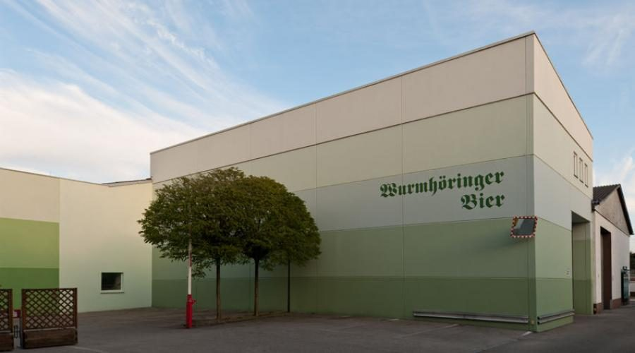
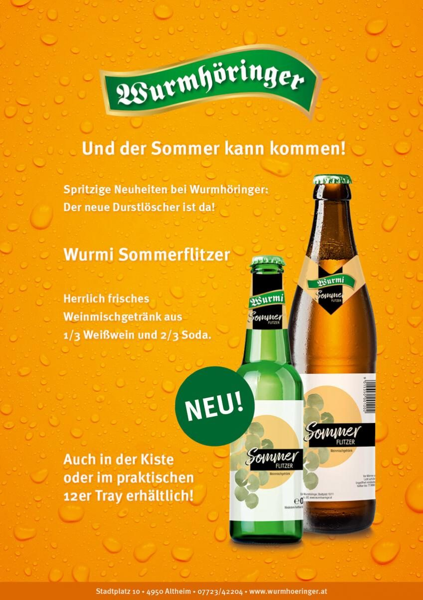
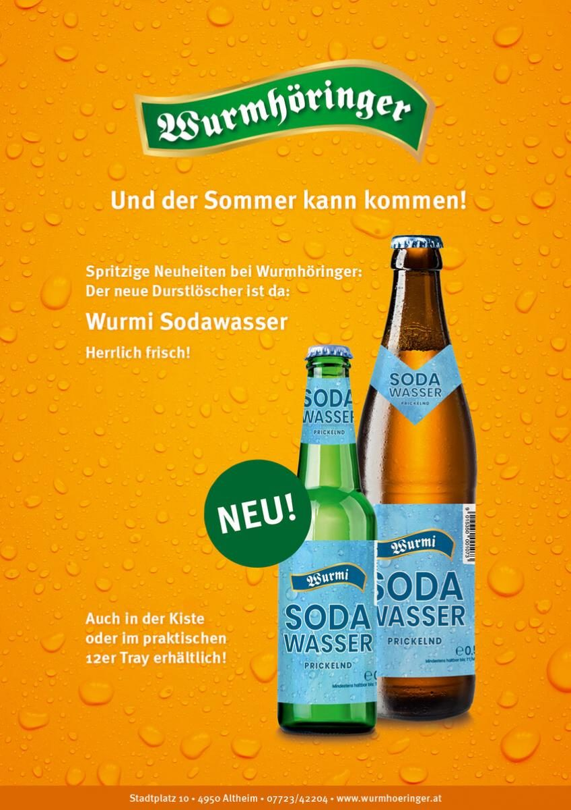

Braugasthof
A guada Platz
Braugaststube, Schalander-Stüberl, Gambrinus-Zimmer, Gastgarten und der angenehm temperierte Arkadenhof. Guad sitzen, guad essen, guad trinken, guad ratschen.

Am Stadtplatz in Altheim brauen wir seit fünf Generationen – und servieren das Ergebnis gleich nebenan in der Braugaststube. Frisch gezapft, zu Innviertler Knödeln, knusprigen Ripperln und der Bradlpartie.
Büro besetzt: Montag bis Freitag 08:00–16:30 Uhr. Für Pakete, Gutscheine und Sonderwünsche bitte anrufen: +43 7723 422 04.
Was im Sudhaus entsteht, steht wenige Meter weiter auf dem Tisch. Dazu kommt ein dritter Betriebszweig, den viele gar nicht kennen: unser Transportunternehmen im Schüttgutverkehr.
Braugaststube, Schalander-Stüberl, Gambrinus-Zimmer, Gastgarten und der angenehm temperierte Arkadenhof. Guad sitzen, guad essen, guad trinken, guad ratschen.

Acht Biere vom Premium Märzen bis zum alkoholfreien WURMI, dazu vier Radler, die Achtaler Limonaden sowie Soda und Mixgetränke – alle aus Altheim.

Die Wurmhöringer Transport- und Handels GmbH fährt Getreide, Saatgut, Obst, Gemüse und Granulate – mit Kippfahrzeugen bis 95 m³ Kubatur.
Zwei spritzige Neuheiten aus der Abfüllung: der Wurmi Sommerflitzer, ein Weinmischgetränk aus einem Drittel Weißwein und zwei Dritteln Soda – und unser Wurmi Sodawasser, herrlich frisch pur oder zum Aufspritzen. Beide gibt es neu auch in der Kiste beziehungsweise im praktischen 12er-Tray.
Und noch eine Nachricht aus dem Haus: Mit Beginn dieses Jahres hat Franz Claus Wurmhöringer das Familienunternehmen in fünfter Generation übernommen – als jüngster Braumeister seiner Generation.


„Alles zu seiner Zeit, nicht alles zu jeder Zeit.“ Getreu diesem Motto kochen wir saisonbewusst, abwechslungsreich und regional. Dazu greifen wir mit Begeisterung auf überlieferte, bewährte Rezepte unserer Vorfahren zurück – Rezepte aus der guadn alten Zeit.
Die Sommer-Speisekarte und das g’schmackige Mittagsmenü wechseln laufend. Im Live-Betrieb dieser Website stehen beide tagesaktuell online statt als PDF-Download.

| Montag | 10:00–14:00 Uhr |
|---|---|
| Dienstag–Donnerstag | 10:00–14:00 Uhr 17:00–24:00 Uhr |
| Freitag–Sonntag | Ruhetag |
| Küche | 11:00–14:00 Uhr 17:00–21:00 Uhr |
| Montag–Freitag | 7:30–11:30 Uhr 13:00–16:30 Uhr |
|---|---|
| Samstag | 9:30–11:00 Uhr |
| Abholung | Kisten, Trays und Partyfässer direkt ab Brauerei |
| Montag–Freitag | 08:00–12:00 Uhr 12:30–16:30 Uhr |
|---|---|
| Pakete & Gutscheine | bitte vorher anrufen: +43 7723 422 04 |
An ausgesprochen ruhigen Tagen behalten wir uns vor, den Gasthof schon vor der eigentlichen Sperrstunde zu schließen. Wir bitten um Verständnis.
Taufe, Erstkommunion, Firmung, Geburtstag, Weihnachtsfeier oder Hochzeitsjubiläum – für jeden Anlass haben wir den passenden Raum und den passenden Service. Busgruppen sind nach Voranmeldung herzlich willkommen.
Seit 2013 ist unsere Brauerei jährlich IFS-zertifiziert. Beim Audit im Oktober 2025 haben wir den IFS Food Version 8 auf höherem Niveau mit 96,2 % erfüllt. Das Zertifikat mit der Registrierungsnummer IFSAGZ2679 ist bis 09.12.2026 gültig.
Geprüft wird der gesamte Weg: Brauen, Filtrieren und Abfüllen von Bier und Biermischgetränken in Glasflaschen sowie das Mischen und Abfüllen von Weinmischgetränken, Sodawasser und Limonaden.